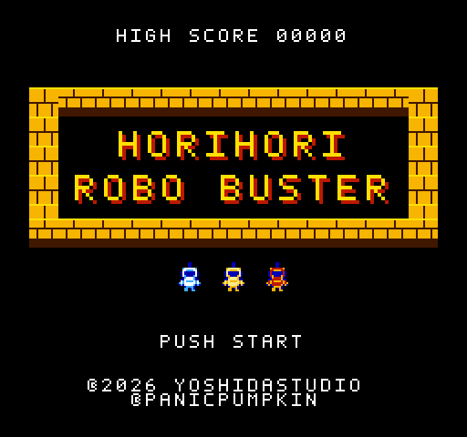
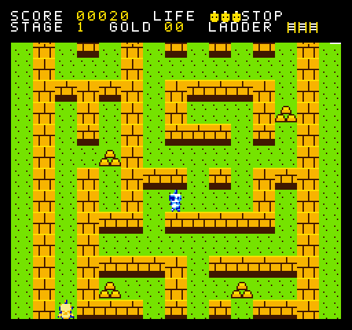
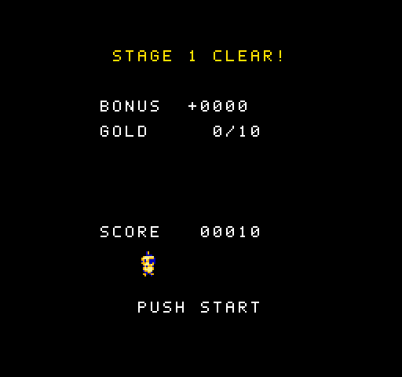

自作ファミコンゲーム
ホリホリ・ロボバスター
ファミコン版
穴をほって、ロボットを落として、頭をふみつけろ！ブラウザゲーム「ホリホリ・ロボバスター」を、ファミコンで動くように作り直しました。
horihori.nes（約40KB）・2026年11月5日版・ハイスコアを記録

画面


あそびかた
- 画面は少しずつ下へ流れていきます。壁にはさまれる前に、迷路の一番上のゴールをめざそう。全5ステージ。
- 穴をほってロボットを落とし、穴から出ている頭をふみつけるとボーナス。
- 壁にはハシゴをかけて乗りこえられます（1ステージ3本まで）。
- 金塊を集めるとボーナス。ストップウォッチを取ると、画面の流れがしばらく止まります。
- 白いロボットは画面の横から走ってきて登場。最後には赤いロボットが追いかけてきます。
そうさ
| 十字キー | 移動。止まっているときは、まず向きが変わり、そのまま押し続けると歩きます。 |
|---|---|
| A | 向いている先に穴をほる／穴をうめる |
| B | 壁に向かって押したあと、ハシゴをかける |
| START | ゲームスタート／ポーズ（ゲームにもどる・自滅・タイトルにもどる） |
あそぶには
ダウンロードした ROM イメージ（.nes ファイル）は、ファミコンのエミュレーターや、フラッシュカートリッジ（EverDrive N8 など）で遊べます。
| 形式 | iNES（.nes）／マッパー0（NROM）／プログラム32KB・キャラクター8KB |
|---|---|
| セーブ | バッテリーバックアップでハイスコアを記録（対応している環境のみ） |
| 人数 | 1人 |
実機での動作は確認中です。動作の保証はできません。